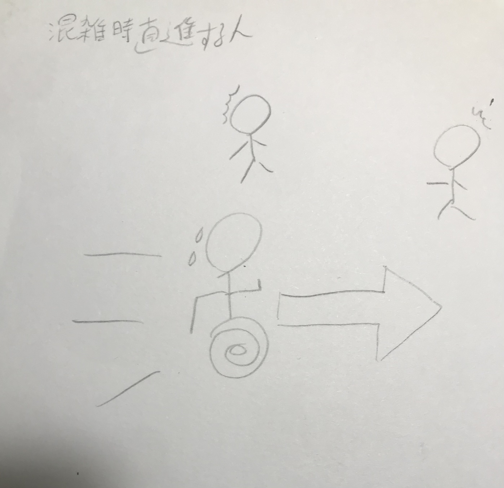
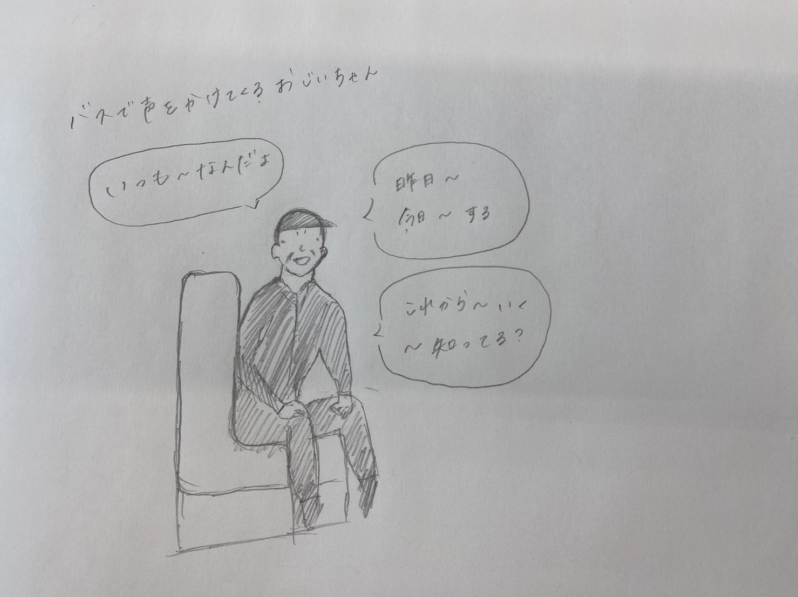
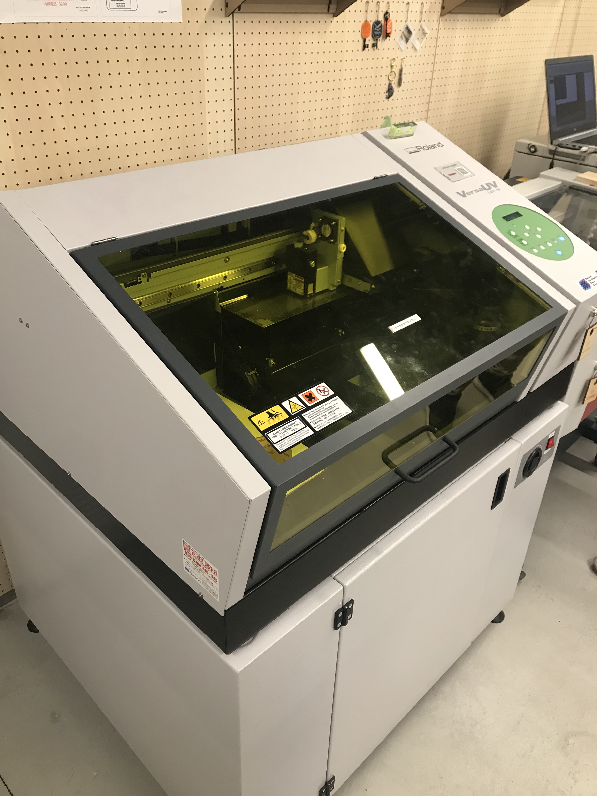
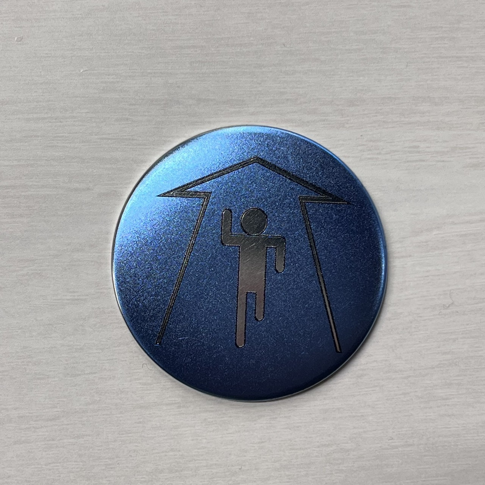
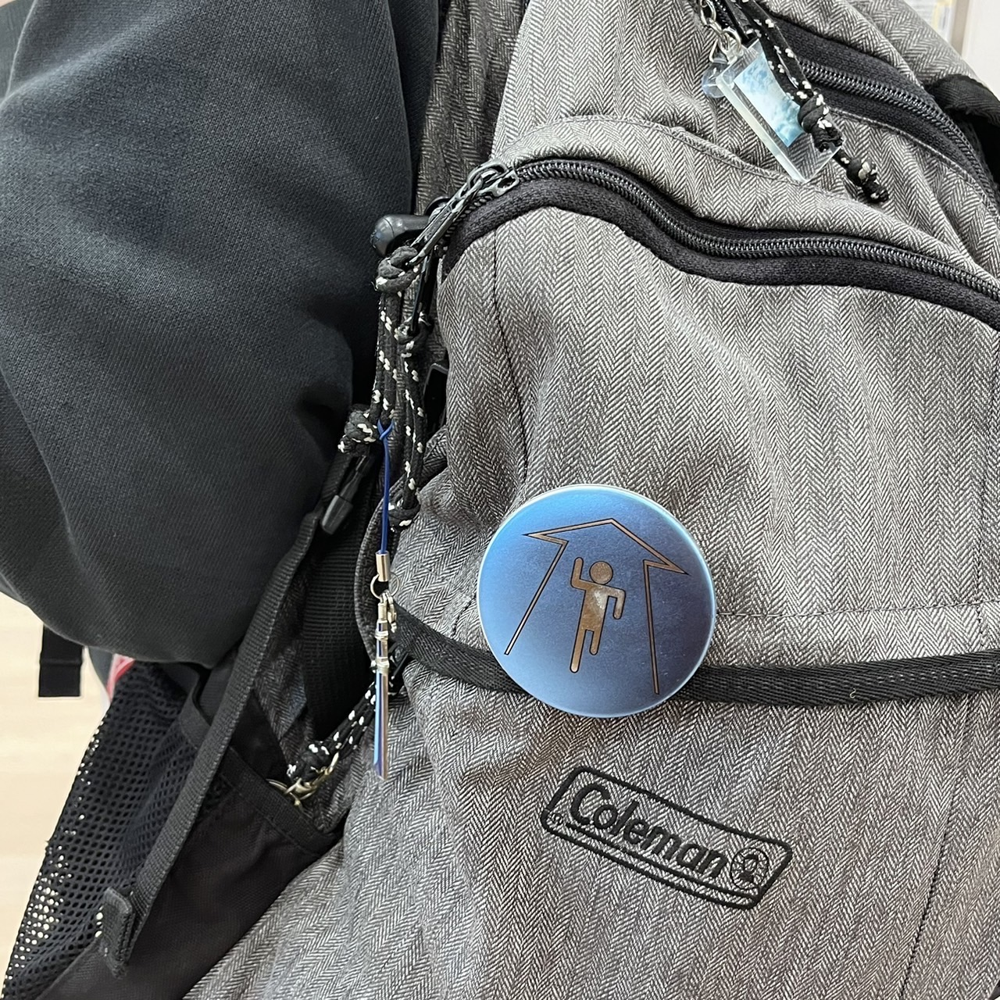
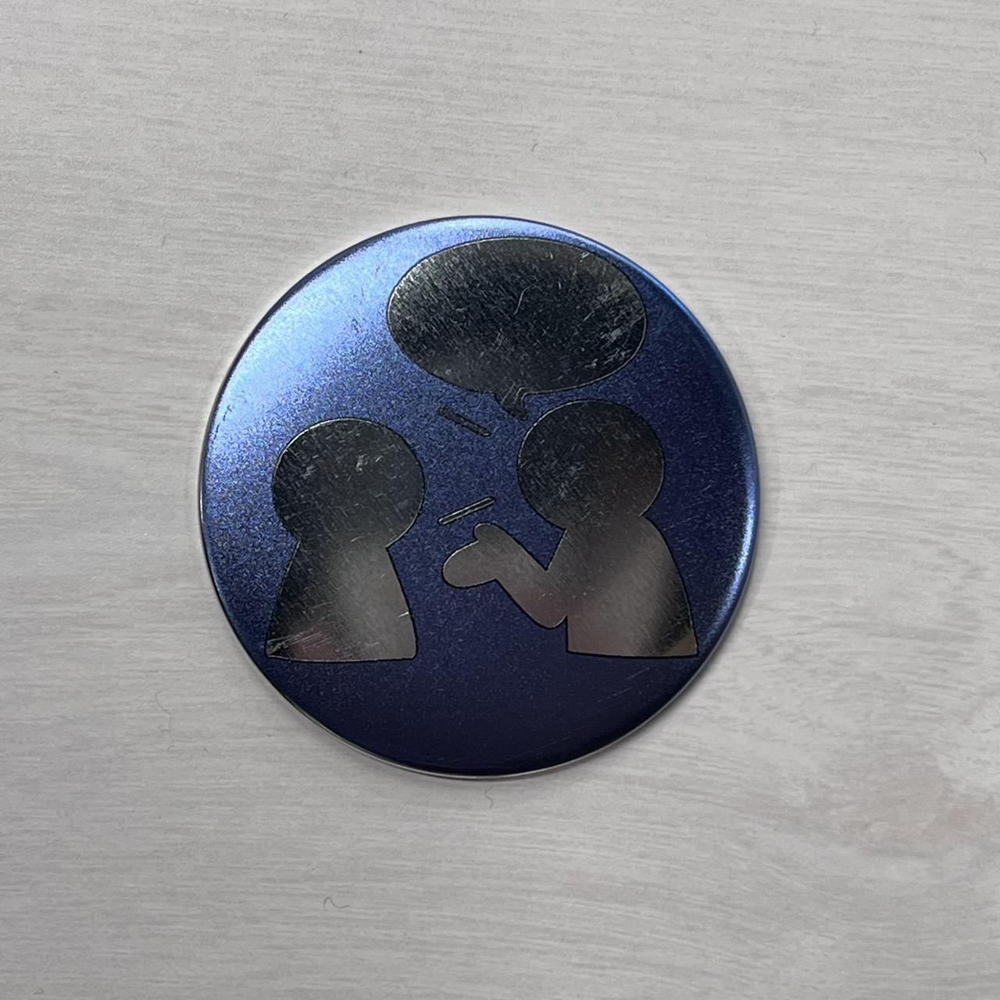
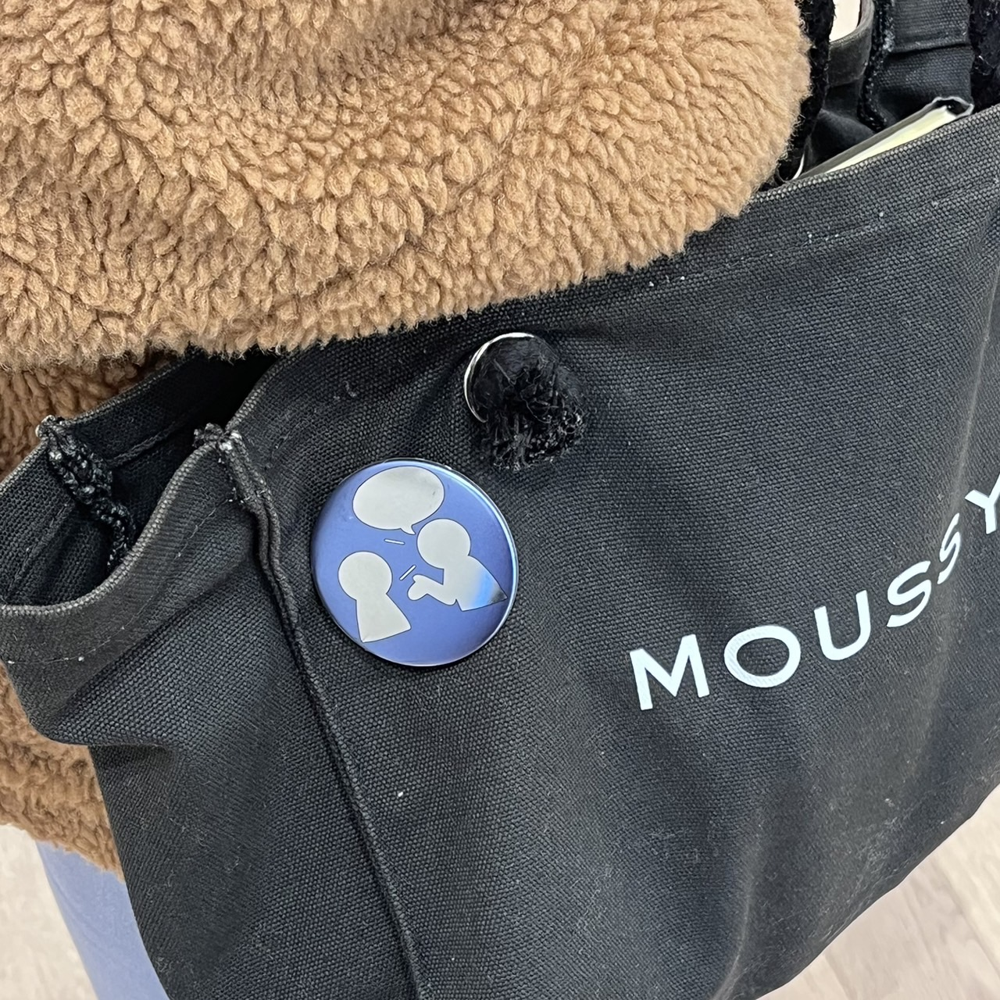

第４回 Design for Others
今回、私を含めた２班は、２種類のニーズに対する２種類３つの製品をデジタルファブリケーションを用いて製作しました。
1.取り組んだ問題
今回、２班は、事前の観察から
「混雑の中で直進したい人」、「見知らぬ人に話しかけたい人」の
２種類の問題に取り組むことにしました。中でも私は、「混雑の中で直進したい人」の方の製品プロトタイピングを担当することにしました。

↓それぞれのPOV


2.製作過程
このバッジの製作には、市販の缶バッジキットにUVプリンタでデザインを印刷するという方法を取り入れました。
まずは、
イラストレーターを用いて、バッジのプリントデザインを行いました。次に、
UVプリンタでそのデータを缶バッジに
印刷しました。


3.完成した製品プロトタイプ
結果的に完成した製品プロトタイプがこちらになります。
↓


今回のデザインは、誰でもパッと見でもわかるように
主に交通標識や国際シンボルマークにも採用されているピクトグラムを元にデザインしました。
また、今回は、バッグなどに付けたり、服に付けたりと多用できるようにバッジを採用しました。
4.まとめ・感想